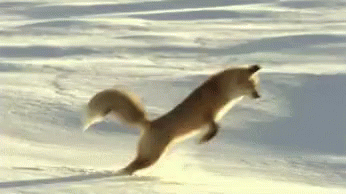

여우에 대하여
갯과에 속하는 소형 포식동물. 크기의 범위는 몸길이 24~140cm, 어깨높이 15~55cm, 몸무게 0.7~17kg이다.붉은여우는 여우 중에서 가장 크고 가장 흔한 여우이며 몸길이 90cm, 꼬리길이 60cm, 어깨높이 55cm, 체중 10kg으로 고양이보다 조금 크고 살쾡이, 중소형견 등과 비슷한 크기이다. 지역에 따라 차이가 큰데, 중부 유럽에 서식하는 개체들은 8kg 내외이며 미국이나 일본에 사는 종은 5~6kg이다.
한국을 비롯해서 전세계적으로 가장 널리 퍼졌고 여우 무리를 대표하는 종류는 붉은여우(Vulpes vulpes). 세계적으로 많이 분포하고, 그 영리함이 교활함과 간사함으로 여겨졌는지 동서양에서 민담 등에 트릭스터로서 많이 등장한다.
여우 중 붉은여우 다음으로 가장 큰 종인 북극여우는 몸길이 60cm, 어깨높이 30cm, 꼬리길이 30cm, 몸무게 3~9kg 정도 나가며 가장 작은 종인 사막여우는 몸길이 30cm, 어깨높이 20cm, 1~1.5kg 내외다. 베르그만의 법칙 참고.
적응력이 뛰어나 전세계의 다양한 지형과 기후에 적응하였다. 평원이나 경작지 근처를 가장 선호하지만 산악지나 툰드라에서도 살 수 있다. 열대와 극지를 제외한 유라시아 전역, 호주 남부, 아프리카 북부, 북아메리카에 걸쳐 널리 분포한다.
